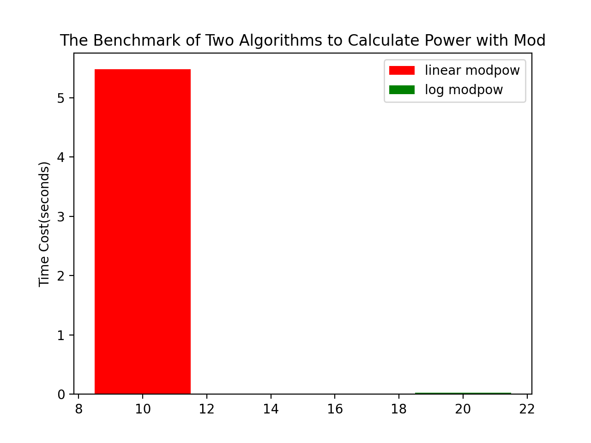

Some Other Good Resources:
Modulo operation with integers and modulo operation under the exponentiation are pretty common in math-related problems in coding competitions. In this article I am going to share with you some techniques I used for such problems. Before that, if you are familiar to the basic of modulo operation you can just skip this part, otherwise take a look of the properties of modulo operation listed below:
And don't forget a >> 1 equals to a / 2, a & 1 equals to a % 2 in C++.
Multiplication of integers with modulo operation is simple, as below, which takes constant time complexity:
int mul(int a, int n, int p) {
return (int)((long long)a * n % p);
}
What about two integers of long long type, well, we can use recursion to calculate their product. Suppose we are calculating the product of a and n, then we can firstly calculate the product of a and n / 2. Suppose that
\[w = an / 2\]
Then if n is odd, we can have
\[an = 2w + a\]
Otherwise
\[an = 2w\]
Thus we can have an algorithm like this:
long long mul(long long a, long long n, long long p) {
if (n == 0) {
return 0; // Pruning
}
ll w = mul(a, n >> 1, p);
if (n & 1) {
return ((w << 1) + a) % p;
}
return (w << 1) % p;
}
And we will find the time complexity of the algorithm is \(\Theta(\log{b})\).
But we can actually do it in constant time, that is, we firstly obtain the product of a and n no matter the result will overflow, then we convert it into long double, divided by p, and convert back to long long, finally we times it with p and subtract it by a * n, the trick here is both a * n and a * (n / p) * p may both overflow, but their difference will be in the range, thus we can have the code like this:
long long mul(long long a, long long n, long long p) {
return a * n - (long long)((long double)a * n / p) * p;
}
The linear calculation is most directly way, whose time complexity is linear to b, as below:
int linear_modpow(int a, int b, int p) {
long long result = a; // Use 'long long' to avoid overflow
for (int i = 1; i <= b; ++i) {
result = result * b % p;
}
return result;
}
That is,
Let \(f(a, b, p) = a^b \bmod p\), then:
If \(b\) is even, then:
\(f(a, b, p) = (a^{b/2})^2 \bmod p = f(a, b/2, p)f(a, b/2, p) \mod p\)
Otherwise:
\(f(a, b, p) = ((a^{(b-1)/2})^2 a) \bmod p = (f(a, (b-1)/2, p)f(a, (b-1)/2, p)a) \bmod p\)
Thus, it can be implemented as below:
int log_modpow(int a, int b, int p) {
if (b == 0) {
return 1; // Pruning
}
long long temp = log_modpow(a, b >> 1, p);
temp = (temp * temp) % p;
if (b & 1) {
return (temp * a) % p;
}
return temp;
}
And the benchmark is shown as below, where you can see there is a huge difference in efficiency of two different algorithms. In the benchmark I take 100000 tests of random positive integers of \(a, b, p\) between 1 and 10000:

| METHOD | TIME COST (seconds) |
|---|---|
| linear_modpow | 5.47541 |
| log_modpow | 0.027426 |
Suppose we are given three integers \(b, p, k\), we are asked to query \(b^{p}\bmod k\), where \(0 \leq b, p < 2^{32}\) and \(1 \leq k \leq 2^{32}\).
Since there is only one case, we could just use quick modulo operation with exponentiation mentioned above to obtain the answer in \(\mathcal{O}(\log k)\). But here we are going to talk about another technique. That is, suppose there are \(5 \times 10^{7}\) cases to test with different values of \(p\) and we also suppose \(k\) is a constant prime, while other restrictions are not changed. In that case, we are going to use modulo operation with exponentiation to obtain \(a^{n}\bmod{m}\) with \(\Theta(\lceil \sqrt{m} \rceil)\) pre-process and \(\mathcal{O}(1)\) query for different \(n\).
But this technique requires two preconditions:
And here are the steps for pre-calculations:
We let \(k = \lceil \sqrt{m} \rceil\), then we can pre-calculate all values below in \(\Theta(k)\) time:
\[ \begin{align*} p_{0} &= 1 \bmod m \\ p_{1} &= a \bmod m\\ p_{2} &= a^{2} \bmod m\\ & \vdots \\ p_{k-1} &= a^{k-1} \bmod m\\ p_{k} &= a^{k} \bmod m \end{align*} \]
And:
\[ \begin{align*} q_{0} &= 1 \bmod m\\ q_{1} &= a^{k} \bmod m\\ q_{2} &= a^{2k} \bmod m\\ & \vdots \\ q_{k-1} &= a^{(k-1)k} \bmod m\\ q_{k} &= a^{k \cdot k} \bmod m \end{align*} \]
Where we can obtain \(p_{0}, p_{1}, \cdots , p_{k-1}, p_{k}\) and \(q_{0}, q_{1}, \cdots , q_{k-1}, q_{k}\) by using recurrence relations:
\[ p_{i} = \begin{cases} ap_{i-1} \bmod m & \text{if $i > 0$} \\ 1 \bmod m & \text{if $i = 0$} \end{cases} \]
\[ q_{i} = \begin{cases} a^{k}q_{i-1} \bmod m & \text{if $i > 0$} \\ 1 \bmod m & \text{if $i = 0$} \end{cases} \]
Since \(m\) is a prime, \(a^{n}\bmod{m} = a^{n \bmod (m-1)}\bmod{m}\) due to Fermat's little theorem. Thus for each \(n\) given, we suppose \(n^{\prime}\) is the result of \(n \bmod (m-1)\), and we can also suppose that \(n^{\prime}=xk+y\), then \(x=n^{\prime} / k\) and \(y=n^{\prime} \bmod k\), And we have
\[ \begin{equation}\label{eq1} \begin{split} a^{n}\bmod{m} & = a^{n \bmod (m-1)}\bmod{m} \\ & = a^{n^{\prime}}\bmod{m} \\ & = a^{xk+y}\bmod{m} \\ & = a^{xk}a^{y}\bmod{m} \\ & = (a^{xk} \bmod m)(a^{y} \bmod m) \bmod m \\ & = q_{x}p_{y}\bmod{m} \\ \end{split} \end{equation} \]
Since we can do \(q_{x}p_{y}\bmod{m}\) in \(\mathcal{O}(1)\), we can solve the problem with the time complexity of \(\mathcal{O}(\sqrt{m} + n)\). Notice that if \(m\) is not a prime, we can also use the conclusion below to process \(n\):
\[ a^n\equiv \begin{cases} a^{n\bmod\varphi(m)},\,&\gcd(a,\,m)=1\\ a^n,&\gcd(a,\,m)\ne1,\,n<\varphi(m)\\ a^{n\bmod\varphi(m)+\varphi(m)},&\gcd(a,\,m)\ne1,\,n\ge\varphi(m) \end{cases} \pmod m \]
Thus we can use \(n \bmod \varphi(m)\) instead of \(n\). Now I wrap the whole algorithm with a tester in C++ as below, to help you understand:
#include <bits/extc++.h>
using namespace std;
using namespace __gnu_pbds;
using ll = long long;
constexpr ll MOD = 1000000007;
namespace QuickModularPowerWithPreprocess {
// all variables
ll k;
vector<ll> p;
vector<ll> q;
// O(1) modulo mul to calculate a^b mod m
inline static
ll modmul(ll a, ll b, ll m) {
a = (a % m + m) % m;
b = (b % m + m) % m;
return ((a * b -
static_cast<ll>(static_cast<long double>(a) / m * b) * m) %
m + m) % m;
}
// Preprocess
inline static
void init(ll a, ll m) {
k = ceil(sqrt(static_cast<double>(m)));
vector<ll>().swap(p);
vector<ll>().swap(q);
p.resize(k + 1);
p.at(0) = 1 % m;
for (int i = 1; i <= k; ++i) {
p.at(i) = modmul(a, p.at(i - 1), m);
}
q.resize(k + 1);
q.at(0) = 1 % m;
for (int i = 1; i <= k; ++i) {
// q[i] = a^k * q_{i-1} mod m = p.at(k) * q_{i-1} mod m
q.at(i) = modmul(p.at(k), q.at(i - 1), m);
}
}
// Query in O(1)
inline static
ll query(ll n) {
ll n_prime = n % (MOD - 1);
ll x = n_prime / k;
ll y = n_prime % k;
return modmul(q.at(x), p.at(y), MOD);
}
}
namespace Tester {
inline static
ll modpow(ll a, ll n, ll M = MOD) {
if (M == 1) return 0;
ll r;
for (r = 1, a %= M; n; a = (a * a) % M, n >>= 1)
if (n % 2)
r = (r * a) % M;
return r;
}
auto get_random_n = []() {
static ll lower_bound = 1;
static ll upper_bound = 1000000000000000000;
static random_device dev;
static mt19937 random_generator(dev());
static uniform_int_distribution dist(lower_bound, upper_bound);
return dist(random_generator);
};
}
int main() {
int t = 10000000;
ll a = 1147483648;
ll b;
// init
QuickModularPowerWithPreprocess::init(a, MOD);
while (t--) {
b = Tester::get_random_n();
assert(QuickModularPowerWithPreprocess::query(b) ==
Tester::modpow(a, b, MOD));
}
return 0;
}
Furthermore, you can always rewrite the algorithm and let the modern C++ does the pre-calculation in compile-time and reduce its runtime, if the value of \(b\) is read from standard input, you can use the faster method for IO I mentioned HERE which will again help you reduce the runtime.
Like the integers, suppose we are given a matrix \(A\) with same length of rows and columns and two positive integers \(b,p\), and calculate \( A^b \bmod p\). Since the matrix has the associative property, we can apply the method which is similar to the second method in 0x02, in coding competition, this technique can help obtain some value that fits in a linear recurrence relation in logarithmic time, such as obtain the kth Fibonacci number in \(O(\log{k})\), which can extend to obtain the kth element of any linear recurrence relation with constant coefficients. I don't want to go deeper since this technique has been covered in Eigen values of linear algebra, and its time complexity is
\[\Theta(r^3 \log b)\]
such that \(r\) is the size of \(A\).
But I would like to share with you some tips when you solve such problems, as a coding competitor: